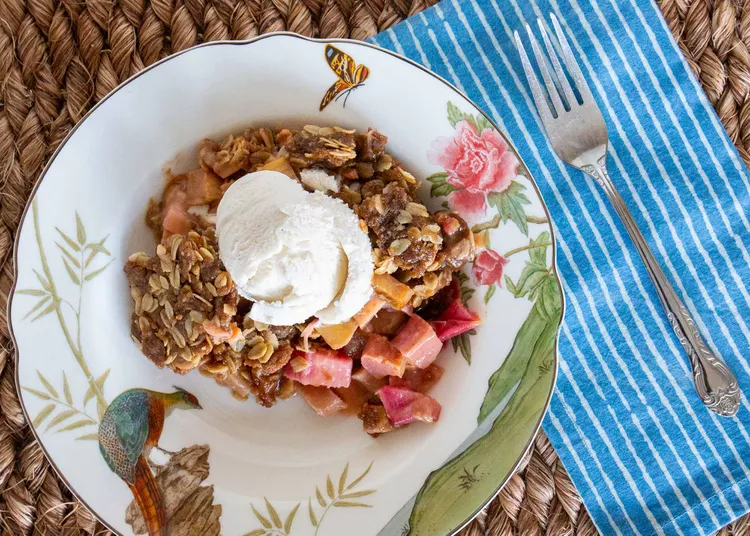

Crème croustillante au gingembre et à la rhubarbe

Un crumble acidulé à la rhubarbe, relevé d'une pointe de gingembre et agrémenté d'une croûte croustillante. La crème pâtissière, onctueuse et fondante, se tient parfaitement. Ce crumble généreux est idéal pour un repas partagé ou une fête.
Soumis par Marie Margaret Briggs
Ingrédients
- 1 tasse de sucre blanc
- 2 gros oeufs battus
- 3 cuillères à soupe de farine tout usage
- zeste d'une orange
- 2 cuillères à soupe de gingembre frais râpé
- ½ cuillère à café de sel
- 8 tasses de rhubarbe hachée
- 2 tasses de cassonade
- 1/2 tasse de farine tout usage
- 1/2 tasse de beurre salé
- 2 cuillères à café de cannelle
- 2 tasses de flocons d'avoine
Instructions
- Placez une grille au centre du four et préchauffez-le à 175 °C (350 °F). Graissez un plat allant au four de 23 x 33 cm (9 x 13 pouces).
- Dans un grand bol, mélanger le sucre blanc, les œufs battus, 3 cuillères à soupe de farine, le zeste d'orange, le gingembre et le sel jusqu'à obtenir une préparation homogène ; incorporer la rhubarbe. Verser la préparation à la rhubarbe au fond du plat à gratin préparé.
- Mélangez soigneusement la cassonade, 125 g de farine, le beurre et la cannelle à l'aide d'un robot culinaire ou d'un blender. Transférez le mélange dans un grand bol et incorporez les flocons d'avoine. Émiettez ce mélange sur la préparation à la rhubarbe dans le plat. Tassez légèrement pour former une croûte.
- Enfournez à mi-hauteur dans un four préchauffé et faites cuire jusqu'à ce que le dessus soit légèrement doré, que la rhubarbe soit bien compotée et que le jus soit très épais et bouillonne, pendant 40 à 50 minutes. Vérifiez régulièrement la cuisson après 30 minutes pour vous assurer que les bulles sont bien épaisses.